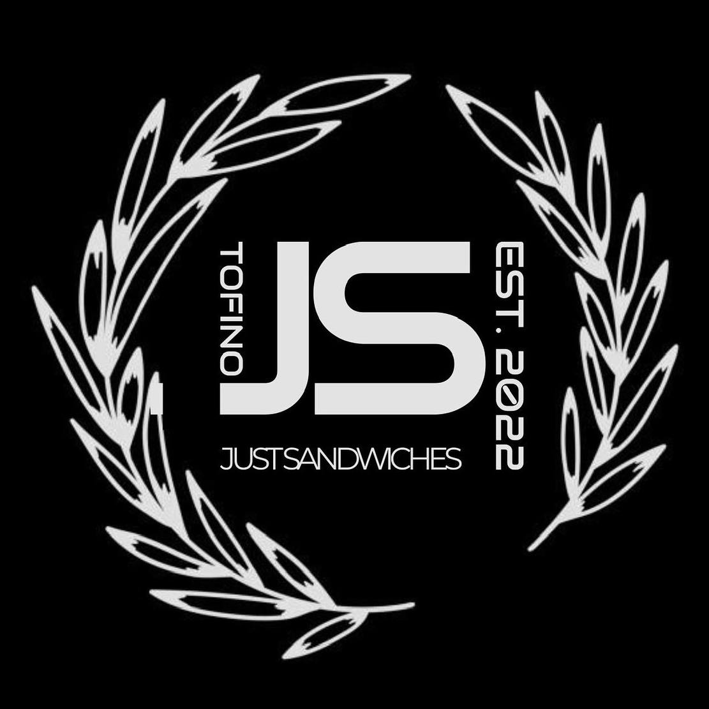
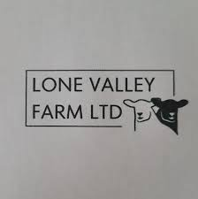
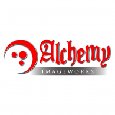

We are proud to work with outstanding local businesses whose support is foundational to our community-building efforts. It is through our partnerships with these dedicated organizations that we are able to make a significant impact together. Thank you for your commitment and contributions to our shared vision.
Ways you can contribute
Cast and Crew Support Staff
Festival Workshop Provider
Live Show Music Provider
Festival Music Provider
Live Show Business
Long Term Partner
Online Vendor
Sponsorship
Mentor
Sweet Spot Life's Bottle Drive
We are collecting bottles to fundraise support for our trip across Canada. We are taking 3 months to film all 10 provinces and 3 Territories. We are capturing the landscape of what it means to be local in Canada. It's simple just follow the steps below!
1. Contact Us - Just give us a call whenever you are ready!
2. Pickup - We will come to you to pick up the bottles
3. Sort - We will sort all bottles and cans for you
4. Deliver - Lastly we will deliver them to the depot
Your driver for this trip is Glen
Phone: 403 915-3587
Email: Gleneboyd@hotmail.com
Contribute
Contributors
Just Sandwiches Tofino

Lone Valley Farm

Alchemy Imageworks

Just Sandwiches Tofino
Thanks to "Just Sandwiches Tofino" for contributing our beachside experience with their delicious, eco-friendly deli sandwiches. Located at Cox Bay and Chesterman Beach, they're dedicated to sustainability, offering emissions-free deliveries and compostable packaging. Their initiative to clean up the beaches with biodegradable bags makes enjoying their health-conscious sandwiches a way to contribute positively to the environment.
Lone Valley Farm
Lone Valley Farm near Arrowwood, AB, specializes in regenerative sheep farming. Our flock includes Purebred White Dorper and Commercial Dorper haired sheep, raised for meat and breeding stock sales. With over 400 sheep and the help of livestock guardian dogs, we graze them on lush valley grasses. In winter, they enjoy our homegrown forage, grains, and locally processed lamb.
Alchemy Image Works
They've successfully handled many digital design and website projects in the past decade, making them experts in web, design, and digital marketing. They're not a one-person operation, but they also don't have the high overhead costs of their competitors. They have a skilled team of creative professionals who offer clients a full range of services at competitive rates. Think of them as a small, results-oriented group of specialists with diverse skills.
How Can We Help?
Thank you for your interest in Your Sweet Spot Life. Whether you have a question, a suggestion, or just want to say hello, we'd love to hear from you. Please feel free to reach out from the following methods below.
FAQ
General Questions
What is Your Sweet Spot Life?
Your Sweet Spot Life is a social enterprise dedicated to transforming communities through various projects and initiatives that celebrate creativity, innovation, and storytelling.
How can I get involved with Your Sweet Spot Life?
There are several ways to get involved, including participating in our events, workshops, and festivals, as well as supporting our initiatives through partnerships or donations.
What is the mission of Your Sweet Spot Life?
Our mission is to foster community development, celebrate Canadian culture, and drive positive change through storytelling, creativity, and innovation.
Partnership and Collaboration
How can my business or organization partner with Your Sweet Spot Life?
We welcome partnerships with businesses, organizations, and individuals who share our values and goals. Please contact us to discuss potential collaboration
Opportunities
Does Your Sweet Spot Life work with local communities?
Yes, we collaborate closely with local communities to ensure that our projects are authentic, impactful, and aligned with their needs and aspirations
Events and Initiatives
What kind of events does Your Sweet Spot Life organize?
We organize a variety of events, including festivals, workshops, storytelling performances, and educational programs, all aimed at promoting creativity, community building, and cultural enrichment
How can I attend Your Sweet Spot Life events?
Information about our upcoming events, including dates, venues, and ticketing details, can be found on our website or social media channels
Support and Contact
How can I support Your Sweet Spot Life's mission?
You can support us by attending our events, spreading the word about our initiatives, volunteering your time or skills, or making a donation to help fund our projects
About us
Watch it unfold before your eyes through our cross-Canada expedition, vibrant festival, storytelling
performance series, community development plan, informative documentary series and see our plans
for future developments. Be part of this transformative journey and help us celebrate the richness and
potential of Canadian society while fostering community and cultural enrichment.
What We Do
Culture
Positivity
Insights
Education
Collaboration
What We Do
Join us in this multifaceted project as we celebrate Canadian culture,
drive positive change, and offer comprehensive insights into various aspects
of Canadian life, history, and community development. Our initiatives include
a cross-Canada expedition, vibrant festival, storytelling performance series,
community development plan, informative documentary series, and plans for future developments.
Be part of this transformative journey and help us celebrate the richness and potential of Canadian
society while fostering community and cultural enrichment.
Exploring Canadian Culture
Explore our cross-Canada expedition and vibrant festival
as we celebrate the richness and potential of Canadian society.
Join us on a transformative journey through diverse storytelling forms.
Driving Positive Change
Join us in driving positive change through our community development plan.
Learn how we engage with local communities and initiatives to foster
sustainable growth and cultural enrichment
Comprehensive Insights
Discover comprehensive insights into various aspects of Canadian life,
history, and community development. Our informative documentary series offers a deep
dive into Canadian culture.
Educational Programs
Engage with our educational programs, including workshops,
seminars, and masterclasses across Canada through the
YSS Live cross-Canada trip. Learn about storytelling,
filmmaking, and gamification.
Creative Collaboration and Impactful Storytelling
Our projects are characterized by creative collaboration and impactful
storytelling. We work with a skilled team of writers, filmmakers, artists,
and educators to develop diverse content that resonates with audiences and sparks meaningful
conversations about Canadian identity and heritage.
Y.S.S Live
Join us in this multifaceted project, as we aim to celebrate Canadian culture, drive positive change,
and offer comprehensive insights into various aspects of Canadian life, history, and community
development.
YSS Live
Step 1
Step 2
Step 3
Step 4
Step 5
10 provinces and three territories coast to coast
Join us on a remarkable journey across Canada, starting in Newfoundland and moving through the Maritime Provinces. We'll head west across the country to British Columbia, then go north to the Yukon, Northwest Territories, and Nunavut, before returning to Labrador. In each place, we'll discover local gems and work with communities to create lasting improvements. We aim to boost local economies, promote tourism, and support community renewal. Our goal is to work together with these communities for sustainable development and a prosperous future for all.
Step 1: Approval process - Phone, video or onsite interview for approval
Our approval process is integral to ensuring that we select candidates who meet our organization's standards. This process involves conducting interviews through phone, video, or onsite meetings, depending on the candidate's availability. Given our limited resources, we can only accommodate interviews for up to 5 businesses per province within a specified timeframe. This ensures that we can allocate sufficient time and attention to each candidate while managing our resources effectively.
Step 2: Show Format
In our candidate assessment process, we start with a 30-minute live filming session to gauge the candidate's presence on camera. Following this, we conduct a structured interview to delve into their background and qualifications. After the interview, candidates are given a tour of our business premises to provide insight into our workplace culture. Finally, we wrap up the process with a session to address any remaining questions and provide feedback on the next steps. This comprehensive approach ensures that we select candidates who not only meet our criteria but also align with our organization's values and culture.
Step 3: What they will need to pay
In our support for your business journey, we prioritize easing financial burdens. Thus, there are no costs or fees involved in our process. We're committed to providing comprehensive support to help you thrive without financial constraints. Our aim is to empower and assist you as you embark on your business journey, ensuring you have the resources and assistance needed to succeed.
Step 4: What happens if I don't get accepted?
If you're not accepted through our standard approval process, don't worry—there are still alternative ways for you to get involved. We offer various avenues for participation and engagement within our organization. Whether through volunteering, attending workshops, or exploring other opportunities, we encourage you to stay connected and engaged with us. We value your interest and are committed to finding the right fit for your skills and aspirations.
Step 5: How do I support this project?
To support this groundbreaking project, simply visit our contributors page. There, you'll find detailed information on how to become involved and contribute to our mission. Whether through financial support, sharing expertise, or volunteering time and skills, there are various ways to be a part of this initiative. Your support is crucial in driving our project forward and making a positive impact in our community. Visit our contributors page today to learn more about how you can get involved.
StreamWeaver Content
We unite diverse creators—from game developers to storytellers—to uplift
communities and showcase their talents. Join us in crafting immersive experiences that transcend traditional boundaries, weaving narratives
that resonate with the essence of our collective stories. Together, we'll forge new connection. Join us and be a part of
something truly extraordinary!
Portal Tree Chronicles
Classic Reworks
Y.S.S Live
Interactive Projects
Portal Tree Chronicles
"The Portal Tree Chronicles" is a multi-generational meta-narrative saga featuring a time-traveling prince who discovers a
community in Ocean Falls, British Columbia. The project encompasses various storytelling forms such as dinner theater, street theater
performances, augmented reality games, and graphic novels. Each of the 11 seasons focuses on different characters, with nine episodes per season.
The project aims to showcase live on-location sketches at an annual artisan festival and airs a Christmas episode each year. The timeline spans from September 2024
to May 2035, with ongoing activities including the annual Artisan Festival and Christmas Eve specials.
Classic Reworks
Classic Reworks is an innovative and thought-provoking initiative that aims to revisit beloved classics
through a lens of inclusivity, cultural sensitivity, and social awareness. Recognizing that certain classics
may carry problematic mindsets rooted in racism, discrimination, or cultural assumptions, our mission
is to reexamine these narratives and engage in meaningful dialogue with the communities or
individuals who created them. By doing so, we seek to foster a more inclusive and nuanced
understanding of these stories, addressing the troubling issues and presenting alternative
perspectives. Classic Reworks is committed to promoting diversity, challenging stereotypes, and
contributing to a cultural landscape that reflects the richness and complexity of the human
experience.
Y.S.S Live
Embark on an immersive journey through the heart of Canada. A compelling limited series that
unfolds the intricate layers of Canadian culture across its past, present, and future. Over five seasons,
each comprising seven episodes, this documentary-style exploration unravels the diverse tapestry of
the nation, tracing its historical foundations, navigating the complexities of modern identity,
envisioning future aspirations, and celebrating the ongoing efforts to sustain and diversify the cultural
mosaic. Through captivating visuals, personal narratives, and thought-provoking interviews, we paint a
vivid portrait of a nation shaped by its rich history, cultural diversity, and collective dreams for the
future.
Interactive Projects
Introducing Your Sweet Spot Life's Interactive Projects, where storytelling meets interactivity to create captivating experiences.
Dive into immersive games, choose-your-own-adventure stories, and interactive narratives that invite you to be more than just a spectator.
With our interactive projects, you're the author of your experience, shaping the story and its outcome. It's more than entertainment; it's a
journey of exploration and discovery. Join us as we redefine storytelling and engagement, offering a new way to connect, learn, and be inspired. Your
adventure begins here.
Contact Us
Reach out to us for recommendations!
We would love to hear from our supporters on their opinions or ideas for future Meta Narrative Projects
The Reservoir
We're developing a customizable CRM tailored to your needs - whether it's your business,
community, or organisation. We analyse your communication methods and unique expressions to help you
grasp your business better. Then, we collaborate with your community to supply the resources you require
to succeed.
Switch to The Reservoir
Work Seamlessly
Learn and Adapt
Continuous Improvement
Community Collaboration
Step 1
All you have to do is switch to our CRM system. Connect your communication systems, your emails, your phone system,
your SMS. As we grow we will be onboarding more tools to connect your communication systems together.
Step 2
Work how you always work. Send your emails, Book your events, Travel, and do all of your daily operations.
Use our constantly growing library of templates to seamlessly connect with the people in your network.
Step 3
As you use the system, it will evaluate your methods to help you learn the most effective processes
and best practices for your business. On your request It will rearrange your organisational systems to
best suit your unique structure.
Step 4
After the CRM analyses your processes, you'll know what you're doing well and what needs improvement.
We will then collaborate with you and your community to address any resource gaps you have.
Step 5
Next, We're creating resource hubs across provinces and territories offering educational programs,
interactive experiences, artisan manufacturing, physical and online marketplaces, and more.
S.T.A.R.T
Join S.T.A.R.T. (Systematic Training and Restoration Team), our dual-sided initiative for businesses and individuals.
Enhance productivity and well-being through structured training and mental health support. Fulfill your purpose with
our community-focused approach. Start your transformative journey today!
S.T.A.R.T
Assess
Plan
Learn
Grow
Create
S.T.A.R.T
S.T.A.R.T. (Systematic Training and Restoration Team) is our unique program aimed at helping both businesses and individuals. It focuses on two main areas: improving work and personal skills through Systematic Training, and supporting mental health and well-being under Restoration. The idea is to work together as a team (the "T" in S.T.A.R.T.) to learn and grow. We specifically help professionals who are struggling by offering ongoing support, like mentorship and counseling, and making sure they keep making progress. Our goal is to help everyone find and follow their true purpose, making sure their work and personal life reflect what they truly value and aim for, offering solutions that last.
Assess
At the start of our consulting process, we begin with a detailed review to understand our client's current situation. We look closely at what they're doing well, where they can improve, areas for growth, and potential challenges. This step helps us get a clear picture of where the client stands. Our goal is to gather important information that will help guide us through the rest of our work together, making sure we offer solutions that are specifically designed to meet their needs and help them succeed.
Plan
After the initial assessment, the consulting journey progresses to the planning stage. In this phase, we develop a strategic plan that is carefully designed using the insights gathered during the assessment. This plan includes clear, measurable goals and objectives, as well as the steps needed to reach these targets. The planning phase acts as the guiding framework for the entire consulting process, setting the path for achieving the outcomes we aim for.
Learn
Once the strategic plan is established, we move into the learning phase of the consulting process. This phase focuses on putting the plan into action through different learning initiatives, such as workshops, training sessions, or educational materials. The aim here is to provide individuals with the essential knowledge and skills they need to effectively carry out the strategic plan
Grow
Following the learning phase, we enter the growth stage of the consulting process. This stage is all about observing and encouraging both personal and professional growth. We use key performance indicators (KPIs) to track progress, making sure that everyone involved is improving in their skills, competencies, and general performance.
Create
The consulting process culminates in the creation phase. At this point, participants use the knowledge and skills they've gained to produce concrete results. This may include creating solutions, introducing innovations, or reaching the specific goals set out in the original strategic plan. The creation phase signifies the end of the consulting journey, showcasing the real-world effects and achievements of the process.
Festivals
Welcome to the YSS Live and Festival! Discover an exclusive, educational, and interactive experience with limited live space.
If you weren't approved for YSS Live, you still have a chance to participate as a workshop host or vendor. Connect with us on social media to get started!
Approval Process
Event Format
Payment Information
Participation
Support Us
What is the approval process?
Businesses that were approved for the YSS Live are automatically approved for the festival,
there is very limited live space 250 people that includes both vendors and attendees.
If you were not approved for the live show you still have a chance of being a workshop host or vendor.
Just connect with us on social media to start the process.
What it the format of the event?
It is educational and interactive. We are broadcasting across a variety of platforms.
We will be showcasing the creation process from workshops on how we extract raw goods, creation stations and educational games.
The festival will follow the S.T.A.R.T. program from beginning to end. We will also be presenting a new project The Portal Tree Chronicles a
meta-narrative saga about a time traveling prince from a different realm.
Do I Need To Pay?
Yes, There is a lot that goes into hosting an event like this.
As a festival vendor you will get full access to all our supports. Our CRM, online and in person festival,
the S.T.A.R.T. program, mentorship opportunities both as paid mentors and as businesses needing mentorship support themselves.
Your payment covers those costs. You get a fully customized package that fills your needs
What if I don't get accepted?
There are other ways to get involved. Also,
this is the first year we will continue to host these festivals annually.
There are always ways you can be part of this constantly evolving community.
How do I support this project?
Go to our contributors page to be a part of this ground breaking event!